Inhalt Index DeskTop Bronstein

 Dynamische Systeme und Chaos Gewöhnliche Differentialgleichungen und Abbildungen Dynamische Systeme Invariante Mengen
Dynamische Systeme und Chaos Gewöhnliche Differentialgleichungen und Abbildungen Dynamische Systeme Invariante Mengen


Sei  ein dynamisches System auf 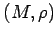 und A eine unter
ein dynamisches System auf 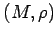 und A eine unter  invariante Menge. Dann heißt 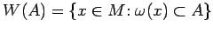 Einzugsgebiet von
invariante Menge. Dann heißt 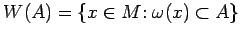 Einzugsgebiet von  .
.
Eine kompakte Menge 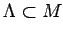 heißt Attraktor von  auf
auf  , wenn
, wenn  invariant unter
invariant unter  ist und es eine offene Umgebung U von
ist und es eine offene Umgebung U von  gibt, so daß 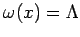 für fast alle (im Sinne des LEBESGUE-Maßes) 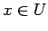 gilt.
gibt, so daß 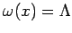 für fast alle (im Sinne des LEBESGUE-Maßes) 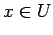 gilt.
| Beispiel |
|
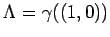 ist ein Attraktor des Flusses von (17.9a). Dabei ist 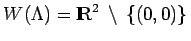. |
Für manche dynamischen Systeme ist ein allgemeinerer Attraktorbegriff sinnvoll. So gibt es invariante Mengen  , die in jeder Umgebung periodische Orbits besitzen, die nicht von
, die in jeder Umgebung periodische Orbits besitzen, die nicht von  angezogen werden (z.B. der FEIGENBAUM-Attraktor). Die Menge
angezogen werden (z.B. der FEIGENBAUM-Attraktor). Die Menge  muß auch nicht unbedingt durch eine einzige
muß auch nicht unbedingt durch eine einzige  -Grenzmenge aufgespannt werden.
-Grenzmenge aufgespannt werden.
Eine kompakte Menge  heißt Attraktor im Sinne von MILNOR von
heißt Attraktor im Sinne von MILNOR von  auf
auf  , wenn
, wenn  invariant unter
invariant unter  ist und das Einzugsgebiet von
ist und das Einzugsgebiet von  eine Menge mit positivem LEBESGUE-Maß enthält.
eine Menge mit positivem LEBESGUE-Maß enthält.